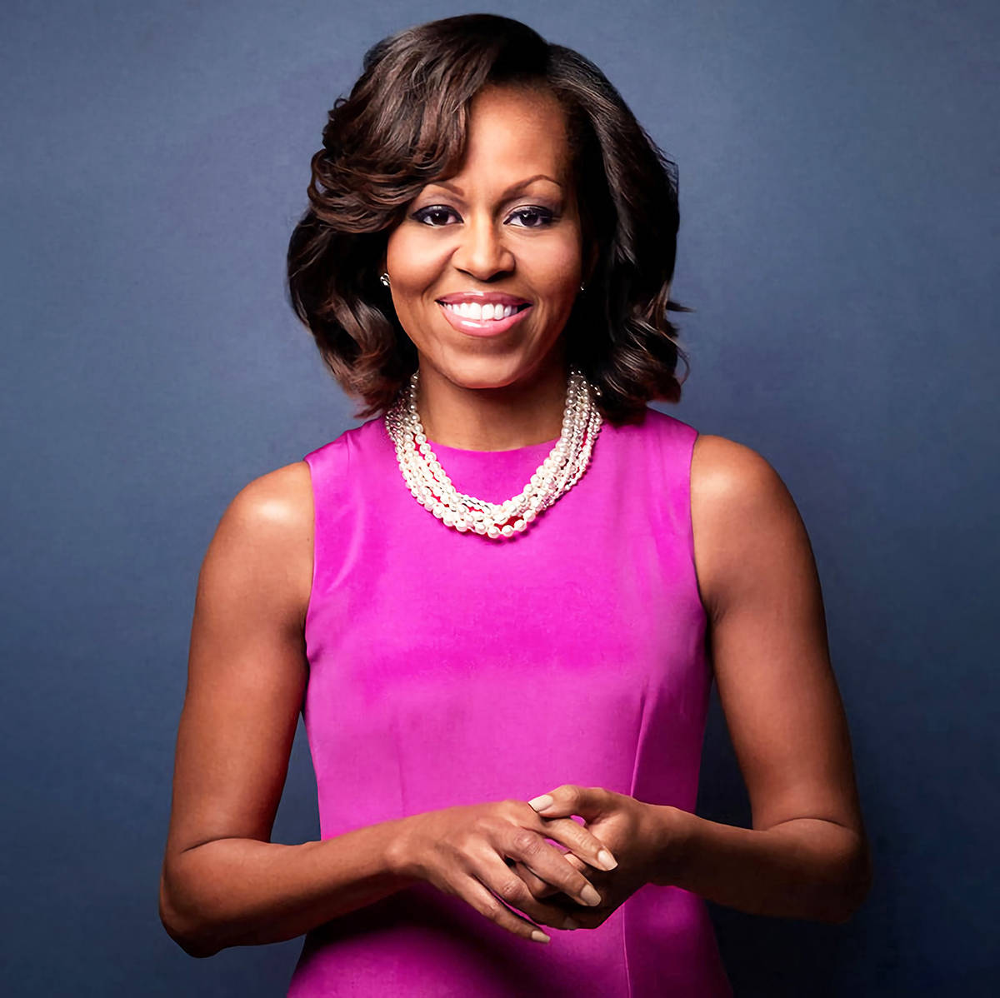

Biografia
Michelle LaVaughn Robinson, nasceu em 17 de janeiro de 1967 em Chicago Illinois. Seus pais foram os maiores incetivos sobre seus estudos e sonhos, e aos quatro anos já sabia ler. Quando estava no High School almejava seguir os passos do irmão e ir para Universidade de Princenton, mas foi desencorajada pela orientadora da escola. Contrariando a orientadora, Michelle se formou em Sociologia com ênfase em Estudos Afro-Americanos na Universidade de Princenton. Depois de se formar, continuou sua vida acadêmica e se formou na Faculdade de Direito da Universidade de Harvard. Depois de formada Michelle voltou a Chicago e consegui seu primeiro emprego como advogada na Chicago firm Sidley Austin, onde conheceu Barack Obama.
Michelle seguiu sua verdadeira paixão em trabalhar ajudando as pessoas, e entrou na carreira pública, atuando na áera de planejamento e desenvolvimento na Prefeitura de Chicago. Posteriormente fundou um programa para auxiliar jovens a ingressar na carreira pública. Depois fez parte da Universidade de Chicago como reitora associada nos serviços estudantis. Ainda na Universidade de Chicago trabalho como diretora executiva de assuntos comunitários do Hospital Universitário, passando a Vice Presidente. Michelle Continuou seu trabalho no Hospital Universitário até o início da campanha eleitoral de seu marido Barack Obama, então senador de Illinois, para presidência dos Estados Unidos. Depois que o marido foi eleito, Michelle se dedicou a carreira de escritora.
“Toda menina no planeta deve ter a mesma oportunidade para cumprir e moldar seu próprio destino.”
Conheça mais sobre sua carreira
Girls Opportunity Alliance
Michelle e Barack Obama criaram a Obama Foundation, uma fundação que tem como missão inspirar, empoderar e conectar pessoas, mudando suas vidas. A fundação trabalha em muitas frentes para atingir suas metas, tentanto minimizar os problemas sociais que afetam a vida das pessoas e da comunidade do sul de Chicago, onde a fundação está localizada. Mas não só com os problemas da região de Chicago os Obamas estão preocupados. A "Girls Opportunity Alliance" , é um dos vários programas da Obama Foundation, liderado por Michelle Obama. O objetivo deste programa é fazer com que meninas do mundo inteiro tenham oportunidade de mudar suas vidas através da educação. Fazendo com que meninas não abandonem os estudos seja por serem as responsáveis pela casa ou casamentos arranjados. Para alcançar as áreas mais remotas e com condições mais precárias a Girls Opportunity Alliance tem parcerias com outras fundações sem fins lucrativos em diversos paises, assim consegue entender a realidade de cada região e entrar em contato direto com os lideres de comunidades que realmente querem fazer a diferença na vida de muitas meninas ao redor do mundo.
Becoming
Em uma vida cheia de significado e realização, Michelle Obama emergiu como uma das mulheres mais icônicas e convincentes da nossa época. Como primeira-dama dos Estados Unidos da América - a primeira afro-americana a desempenhar esse papel - ela ajudou a criar a Casa Branca mais acolhedora e inclusiva da história, além de se estabelecer como uma poderosa defensora de mulheres e meninas nos EUA e em outros países, mudando dramaticamente as maneiras pelas quais as famílias buscam vidas mais saudáveis e ativas, e permanecendo com o marido enquanto ele conduzia a América em alguns de seus momentos mais angustiantes. Em suas memórias, um trabalho de profunda reflexão e fascinante narrativa, Michelle Obama convida os leitores a seu mundo, descrevendo as experiências que a moldaram - desde sua infância no lado sul de Chicago até seus anos como executiva, equilibrando as demandas da maternidade e do trabalho, no tempo que passou no endereço mais famoso do mundo. Com honestidade infalível e humor animado, ela descreve seus triunfos e decepções, tanto públicos quanto privados, contando toda a história como a viveu.
Discurso
Em um dos eventos do Let Girls Learn, na Argentina. Michelle obama discursa sobre a visão que muitos infelizmente ainda tem sobre a educação feminina. Sobre como nosso corpo é julgado como um objeto de maior ou menor valor, a despeito de nossas opiniões, sobre como nos julgam, se falamos muito alto, se somos “mandonas”. Nesse discurso Michelle compartilha sua experiência de vida, ao relatar como era o ambiente em sua casa na infância, onde lhe foi permitido sonhar em ingressar em importantes universidades, de ter o tão sonhado emprego como advogada e melhorar a vida de tantas famílias como a dela. E como ela lidou com a realidade fora do ambiente acolhedor da sua casa, onde na escola foi desencorajada a seguir a mesma universdade do irmão, por acharem que ela não era inteligente o suficiente. Enquanto ao irmão queriam saber sobre qual carreira desejava seguir a ela era questionada sobre que tipo de marido gostaria de ter. Michelle conta que, assim como muitas de nós, ela também duvidou de suas capacidades, ao dar ouvidos ao “conselhos” que eram dados, e como ela superou tudo isso e seguiu em frente com seus sonhos e conseguiu se formar advogada pela Universidade de Harvard.
Podcast
No podcast Michelle Obama vai compartilhar suas experiências conversando de maneira mais íntima com familiares e amigos trazendo temas como relacionamentos, estilo de vida saudável, desafios da maternidade e relacionamento, com alguns de seus colegas sobre como as relações de amizades nos moldam.